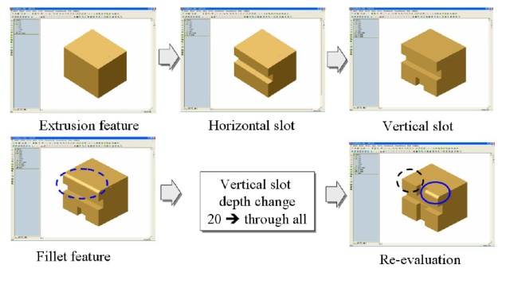

This template is the guideline for a FreeCAD development project. It follows the rules of the Getting Things Done (GTD) process. The projects are collected in the Development roadmap.
Purpose and principles
This is an development and design effort to implement a robust topological naming in FreeCAD.
Outcome
- Interface in (Part::TopoShape) to robustly reference (name) shapes and sub-shapes (faces, edges, vertexes) through a string (sub-element name like "Face1")
Here we need a interface to provide Part::TopoShape with all information need to do the Naming, e.g. NewShape, additional information from a algos like deleted faces, modeling step (for 2.) and ......
- Association of modeling steps with the resulting faces/edges.
In case of a big model the user is lost if he/she has hundreds of fillets or bore hole. So if the faces/edges would know what modeling step it created we could implement a double click on edge/face opens the right feature!
- An algorithm to keep the naming stable throughout changes in modeling history, like splitting edge/faces and moving vertexes

- (optional) memory optimized data structure to keep only changed faces/edges in each modeling feature. <p> This will become important when the models get bigger. Its not efficient to copy most of the shape just through. Would be much more effective to share the unchanged faces/edges between Feautures and copy only whats changed.
Brainstorming
A lot was discussed in the "Robust Reference" Post
of jrheinlaender.
Others
Literature & Papers
- J Kripac, "A mechanism for persistently naming topological entities in history-based parametric solid models"
- Describes a method to do the first three points in the List. Would say the is the approach used by Catia and OCC-TNaming. At least the interface looks the same. The paper was nowhere to download. I had to buy it. If someone is interested I can send it via E-Mail.
- Interesting approach via shell-graphs, tackles the point four on the list by reusing faces/edges not changed.
- Very good overview and Examples
- and some more to come....
Summary of Work To-Date
As of June 13th, 2016, here is a summary of the work that has been done for this project:
- jrheinlaender produced a lot of code in 2012 that relies heavily on the Sketch workbench for resolving "Robust References"
- ickby had taken a stab at incorporating some or jrheinlaender's code into modern freecad. This post has a link to his github repo.
- In 2016, ezzieyguywuf revived jrheinlaender's thread and subsequently started his own. You can see it here
- ezzieyguywuf developed a "light weight" opencascade program for duplicating the Topological Naming issue and for testing potential solutions. See his github repo here
- ezzieyguywuf incorporated the opencascade TNaming toolkit into his test code, and showed how this could help resolve some of the Topological Naming issues. See the github repo
Organizing
Information about TNaming
See here for a decent write-up on ezzieyguywuf's github repo. Here are some highlights:
- opencascade's TNaming relies upon the TDF_Data data framework.
- TDF_Data is a key component of the opencascade OCAF thing, but can be used independent of it
- TDF_Data is essentially a tree in which data is added and then read at a later date
- Whenever a TNaming_NamedShape attribute is added to a node on the TDF_Data tree, a TNaming_UsedShapes attribute is added to the root of the tree
- NOTE: this TNaming_UsedShapes attribute is critical to the utility of the TNaming toolkit. It contains a history of all the TopoDS_Shape used during the 'history' of the part
- TNaming_Builder is used to add information to the TDF_Data tree. It adds a TNaming_NamedShape to a given node on the tree, as well as updating the TNaming_UsedShapes database as necessary.
- Any time the TopoDS_Shape is changed, it must be logged in the TDF_Data structure
- Again, TNaming_Builder is used for this
- See here in the opencascade documentation for a table listing what must be stored in the database. NOTE: this table appears to be incomplete. Some additional testing may need to be done
- In short, any time the TopoDS_Shape is modified, any modified/generated/deleted features must be logged. For the most part, since we're dealing with solids, this means we must log the modified/generated/deleted Faces on the solid
- The TNaming_Selector class is used to "select" a feature that is being tracked on the TDF_Data tree
- a "selected" feature is one that opencascade's TNaming algorithm will maintain a constant reference to, regardless of topological changes
Next actions
- Defining the scope
- Python test cases
- Interface in Part::TopoShape (+ python binding)
Next Steps (as of June 13th, 2016)
- Determine if opencascade TNaming toolkit fully resolves Topological Naming issue in FreeCAD
- What are all instances where Topological Naming is a problem?
- What are complex scenarios where this approach will need to work?
- Incorporate TNaming code into FreeCAD
- Start with a bare-bones approach, i.e. Make a Cube and a Cylinder, Fuse, Fillet, and then re-size the Cylinder. Fillet should not move
- Gradually add more functionality
- Determine if TNaming will be the solution long-term
- Whether or not TNaming is the long-term solution, figure out a way to 'serialize/deserialize' the data that TNaming uses for persistence across sessions
{kind=link}